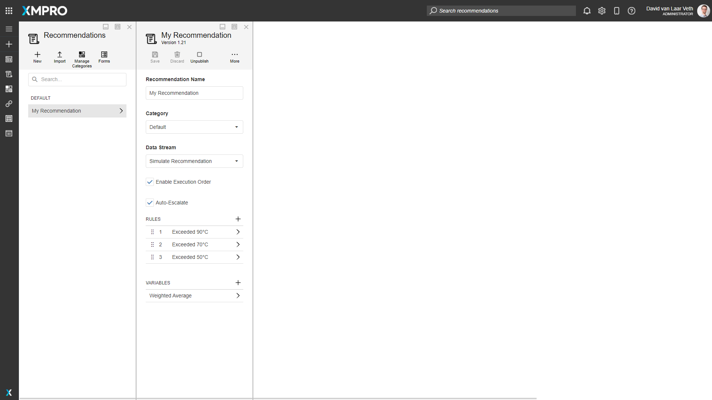
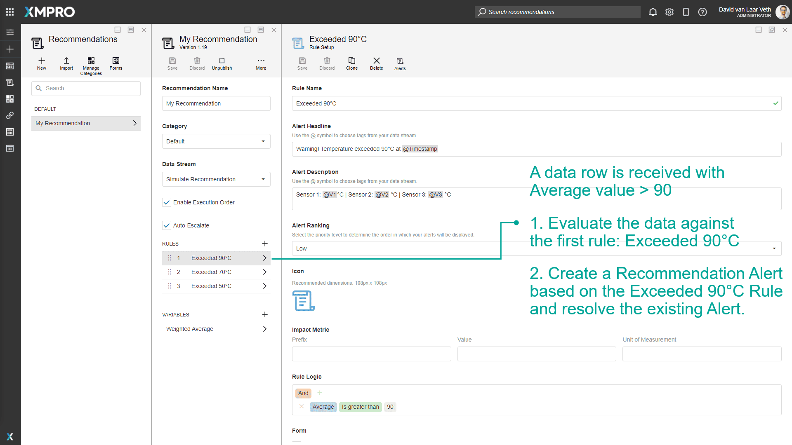
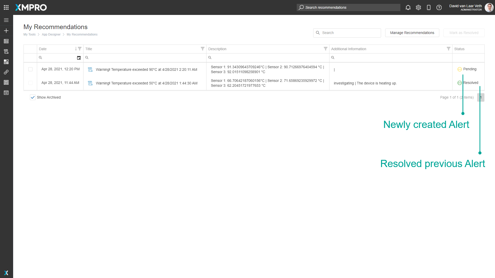

Auto Escalate
Auto Escalate is only available if Enable Execution Order is checked.
Auto Escalate prevents more than one pending Recommendation Alert from existing at once for a single business event.
When an Alert is created, if Auto Escalate is checked, any previously created Recommendation Alert that has not yet been Resolved or Marked as False Positive in the Recommendation is marked as Resolved.
Example
In the following Recommendation, there are three Rules. In each Rule, there is Rule Logic that evaluates whether the Average field from the received data is greater than 50, 70, and 90.

A Recommendation Alert has been created because the Recommendation received a data row with 66.8 as the Average value:

Then the Recommendation receives a data row from the Data Stream with greater than 90 Average value. It will:
- Evaluate the data against the first rule: Exceeded 90°C. The average value is greater than 90, so it will evaluate as true.
- Create a Recommendation Alert based on the Exceeded 90°C Rule, and resolve the pending Recommendation Alert.


Last modified: November 12, 2025